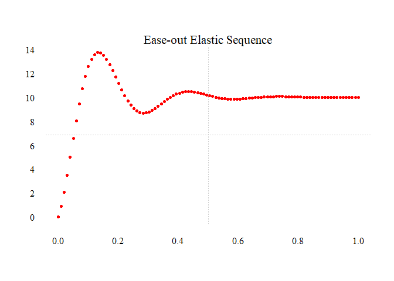

This package is born out of curiosity rather than necessity. sequentially creates non-linear and linear numeric sequences. By using non-linear interpolation the user can animate their data in a way that is more visually pleasing than uniform, linear interpolation. The functions in this package represent a break from the essential but boring seq() family of functions–I wanted to plot numeric sequences that looked different and could be used in data visualization, motion animation, frame interpolation, UI/UX design, population dynamics, or other fields.
Installation
You can install the development version of sequentially like so:
devtools::install_github("jpmonteagudo28/sequentially")or download it from CRAN:
install.packages("sequentially")What you get:
This is a basic example which shows you how to solve a common problem:
library(sequentially)
# Linear sequence from 0 to 10
t <- seq(0,1,length.out = 100)
lin_seq <- seq_smooth(0, 10, n = 100, type = "linear")
plot.new()
plot.window(range(t),range(lin_seq))
points(t,lin_seq,pch = 16, cex = .75,col = "red")
axis(1,tcl = 0.75,lwd = 0, family = "serif")
axis(2,lwd = 0, family = "serif", las = 1)
grid(2,3,col = "gray80",lty = "dotted", lwd = 0.50)
mtext("Linear Sequence",3,cex = 1.3, family = "serif")
# Elastic easing out sequence
elastic_seq <- seq_smooth(0, 10, n = 100, type = "elastic", ease = "out")
plot.new()
plot.window(range(t),range(elastic_seq))
points(t,elastic_seq,pch = 16, cex = .75,col = "red")
axis(1,tcl = 0.75,lwd = 0, family = "serif")
axis(2,lwd = 0, family = "serif", las = 1)
grid(2,3,col = "gray80",lty = "dotted", lwd = 0.50)
mtext("Ease-out Elastic Sequence",3,cex = 1.3, family = "serif")
What is special about using README.Rmd instead of just README.md? You can include R chunks like so:
You’ll still need to render README.Rmd regularly, to keep README.md up-to-date. devtools::build_readme() is handy for this.
You can also embed plots, for example:
Related Software
- tweenr - an R package dealing with data animation.
- displease - a related package used as inspiration for this one.
- ofpennereasing - Rcpp files containing Robert Penner’s easing functions